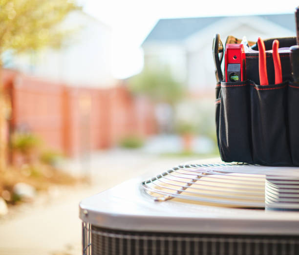

Tampa's Most Trusted HVAC Repair Specialists
When your HVAC system breaks down in Tampa's demanding climate, you need fast, reliable repair services from certified professionals. Our expert technicians provide comprehensive HVAC repair services for all major brands and system types, from emergency air conditioning failures to heating system problems and everything in between. With fully-stocked service vehicles and 24/7 availability, we're equipped to handle any HVAC emergency that threatens your family's comfort.
Emergency HVAC Repair Services
HVAC emergencies never happen at convenient times, which is why our emergency repair services are available 24 hours a day, 7 days a week throughout Tampa and surrounding areas. Our emergency technicians arrive quickly with fully-equipped service vehicles containing diagnostic equipment, replacement parts, and specialized tools necessary to complete most repairs during the initial service call.
Emergency situations we handle include complete system failures, refrigerant leaks, electrical problems, compressor failures, and any HVAC issue that affects your family's safety or comfort. We prioritize emergency calls and guarantee rapid response times to restore your comfort as quickly as possible.
Common HVAC Problems We Repair
Our certified technicians diagnose and repair all types of HVAC problems that affect Tampa homes and businesses. Common issues include inadequate cooling or heating, unusual noises, frequent cycling, high energy bills, poor air quality, and complete system failures. We use advanced diagnostic equipment to identify root causes rather than just treating symptoms.
Specific problems we address include compressor failures, refrigerant leaks, electrical issues, thermostat malfunctions, ductwork problems, and component wear that affects system performance. Our comprehensive approach ensures lasting repairs that prevent recurring problems and restore optimal system operation.
Air Conditioning Repair Services
Tampa's hot, humid climate places exceptional demands on air conditioning systems, making reliable AC repair services essential for home comfort. Our AC repair specialists are trained on all major brands and system types, from traditional central air systems to ductless mini-splits and heat pumps, ensuring expert service regardless of your system type.
Air conditioning repairs we perform include compressor replacement, refrigerant leak repair, evaporator and condenser coil cleaning, electrical component replacement, and thermostat troubleshooting. We maintain extensive parts inventory to minimize repair delays and get your AC system running efficiently as quickly as possible.
Refrigerant Leak Detection and Repair
Refrigerant leaks are among the most common AC problems in Tampa's demanding climate. Our technicians use advanced leak detection equipment to locate even small leaks that affect system efficiency and cooling capacity. We repair leaks using approved methods and recharge systems with the correct refrigerant type and quantity.
Refrigerant leak repairs include seal replacement, coil repair, line set replacement, and system evacuation and recharging. Proper refrigerant leak repair restores cooling capacity while preventing environmental damage and ensuring compliance with EPA regulations.
Heating System Repair Services
While Tampa's heating needs are limited compared to northern climates, reliable heating repair services are essential during occasional cold snaps. Our heating repair specialists service all types of heating systems, including heat pumps, electric furnaces, gas furnaces, and ductless heating systems that provide backup warmth when needed.
Heating repairs include heat exchanger inspection, electrical component replacement, thermostat calibration, and safety system testing. We ensure all heating repairs meet safety standards while restoring reliable operation for those occasional times when heating is needed in Tampa.
Heat Pump Winter Operation
Heat pumps are particularly popular in Tampa because they provide both heating and cooling efficiently. When heat pumps experience problems during heating mode, our specialists diagnose and repair issues that affect winter operation, including defrost cycle problems, auxiliary heat malfunctions, and reverse valve failures.
Heat pump heating repairs ensure reliable operation during Tampa's mild winter periods while maintaining the energy efficiency that makes heat pumps ideal for Florida's climate. We specialize in heat pump technology and understand the unique requirements of these versatile systems.
Electrical HVAC Repairs
HVAC electrical problems can be dangerous and complex, requiring certified technicians with electrical expertise. Our HVAC repair specialists are trained in electrical troubleshooting and repair, handling everything from simple thermostat wiring to complex control board replacements and electrical safety issues.
Electrical repairs include control board replacement, wiring repair, capacitor replacement, contactor replacement, and electrical safety inspections. We ensure all electrical repairs meet code requirements while restoring safe, reliable HVAC operation for Tampa families.
Smart Thermostat and Control Issues
Modern HVAC systems often include sophisticated controls and smart thermostats that can develop problems requiring specialized knowledge. Our technicians are trained on the latest control technologies and can diagnose and repair issues with programmable thermostats, smart controls, and advanced system management features.
Control system repairs include thermostat replacement, sensor calibration, communication troubleshooting, and system programming. Proper control system operation is essential for maintaining comfort and energy efficiency in Tampa's demanding climate.
Ductwork and Airflow Repairs
Ductwork problems can significantly affect HVAC system performance and energy efficiency. Our ductwork repair services address leaks, disconnections, insulation problems, and airflow restrictions that prevent proper system operation. Ductwork repairs often improve comfort while reducing energy costs.
Ductwork services include leak sealing, insulation repair, connection tightening, and airflow balancing. Many Tampa homes benefit from ductwork improvements that enhance comfort while reducing energy consumption and improving indoor air quality.
Ventilation System Repairs
Proper ventilation is crucial for maintaining healthy indoor air quality in Tampa's humid climate. Our ventilation repair services address problems with exhaust fans, ventilation dampers, and air exchange systems that affect indoor air quality and moisture control.
Ventilation repairs help prevent moisture problems, improve air quality, and maintain healthy indoor environments. These repairs are particularly important in Tampa's humid climate where proper ventilation helps prevent mold and maintains comfortable humidity levels.
Preventive Maintenance and Tune-Ups
While our repair services handle problems after they occur, our preventive maintenance programs help prevent many common HVAC problems before they affect your comfort. Regular maintenance includes thorough inspections, cleaning, and adjustments that keep systems running efficiently while identifying potential problems early.
Maintenance services include filter replacement, coil cleaning, electrical connection inspection, refrigerant level checks, and performance testing. Regular maintenance typically reduces repair needs by 50-70% while improving system efficiency and extending equipment life.
Seasonal HVAC Tune-Ups
Tampa's year-round HVAC usage requires seasonal tune-ups to maintain peak performance. Our seasonal maintenance includes cooling system preparation for summer operation and heating system checks for winter readiness, ensuring your system operates efficiently regardless of weather conditions.
Seasonal tune-ups help identify wear and potential problems before they become expensive repairs while optimizing system performance for changing weather patterns. Many Tampa customers report improved comfort and reduced energy bills following seasonal HVAC tune-ups.
Commercial HVAC Repair Services
Our commercial HVAC repair services support Tampa businesses with reliable, efficient climate control essential for operations and customer comfort. Commercial systems face unique challenges including extended operating hours, varying loads, and critical uptime requirements that demand specialized expertise.
Commercial repairs include rooftop unit service, chiller repairs, boiler maintenance, and building automation system troubleshooting. We understand the importance of minimizing business disruption while ensuring reliable operation of critical HVAC systems.
Emergency Commercial Service
Commercial HVAC emergencies can affect business operations and customer satisfaction, making rapid response essential. Our emergency commercial services provide 24/7 availability with priority response times to minimize business impact and restore comfortable environments quickly.
Emergency commercial services include after-hours repairs, weekend service, and holiday availability to ensure Tampa businesses maintain comfortable environments regardless of when problems occur. We understand that business climate control cannot wait for convenient service times.
Diagnostic Technology and Equipment
Our repair technicians use advanced diagnostic equipment to accurately identify HVAC problems and ensure effective repairs. Diagnostic tools include digital manifolds, refrigerant leak detectors, electrical meters, airflow measuring devices, and thermal imaging cameras that reveal hidden problems.
Advanced diagnostics enable precise problem identification while minimizing diagnostic time and ensuring accurate repairs. Our investment in diagnostic technology helps us provide faster, more accurate service while reducing callbacks and ensuring customer satisfaction.
System Performance Testing
After completing repairs, we perform comprehensive system testing to verify proper operation and performance. Testing includes capacity verification, efficiency measurement, safety system checks, and operational testing that ensures repairs have restored optimal system performance.
Performance testing provides confidence that repairs have addressed root causes while restoring system efficiency and reliability. We document all testing results and provide customers with detailed explanations of repair work and system operation.
Parts and Warranty Coverage
We maintain extensive parts inventory for all major HVAC brands and system types, enabling most repairs to be completed during the initial service call. Our parts relationships with leading manufacturers ensure access to genuine replacement parts that maintain system reliability and warranty compliance.
All repair work includes warranty coverage on both parts and labor, providing peace of mind and protection for your repair investment. We stand behind our work with comprehensive warranties that ensure lasting repair quality and customer satisfaction.
Manufacturer Authorized Service
Our technicians maintain manufacturer certifications and authorized service relationships with leading HVAC brands, ensuring warranty-compliant repairs and access to technical support for complex problems. Authorized service protects warranty coverage while ensuring repairs meet manufacturer standards.
Manufacturer relationships provide access to technical bulletins, specialized training, and engineering support that enables us to handle even the most complex HVAC repair challenges with confidence and expertise.
Energy Efficiency and System Optimization
Many HVAC repairs provide opportunities to improve system efficiency and reduce operating costs. Our repair approach includes efficiency assessments and recommendations for improvements that can reduce energy consumption while enhancing comfort and reliability.
Efficiency improvements often include component upgrades, control system optimization, and operational adjustments that reduce energy costs while improving performance. These improvements can significantly reduce operating costs while extending system life.
System Upgrade Recommendations
When repairs reveal systems approaching end-of-life or requiring frequent service, our technicians provide honest assessments and upgrade recommendations. We help Tampa customers make informed decisions about repair versus replacement based on cost, efficiency, and reliability considerations.
Upgrade recommendations include detailed cost-benefit analysis, efficiency comparisons, and financing options that help customers make the best decisions for their comfort needs and budget. We provide transparent, honest advice that helps customers achieve long-term satisfaction.
For Tampa residents and businesses facing HVAC problems, our comprehensive repair services provide fast, reliable solutions that restore comfort and efficiency. Contact our HVAC repair specialists today for expert diagnosis and professional repairs that get your system running efficiently in Tampa's demanding climate.
Get Emergency HVAC Repair Service
HVAC system not working? Contact Tampa's most trusted repair specialists for fast, reliable service.